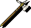
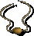

Candlekeep Revisited
Candlekeep Revisited is a compilation of various ideas I had regarding the beginning of Baldur's Gate I. It began with a throwaway remark about having Imoen tag along with you in the prologue, then I began wondering about those temporary companions in Obe's combat tutorial and their potential backstories, then I wanted to add more dialogue with Gorion, and... well, one thing led to another, and I made a mod to put all these ideas together before they became a mess in my head.
It's a difficult mod for me to define. It's not a quest mod despite me categorizing it as such—outside of a few minor fetch quests, you're never really expected to do anything extra. It just adds a few more NPCs to talk to, longer dialogues with some of the existing ones, and of course, Imoen joining earlier than normal. If all you want is to get to the adventuring and questing and everything that makes a D&D adventure, this mod isn't going to offer you that. This (at least, in my opinion) isn't me being defensive either—I have seen people who just want quests and gameplay feeling like it doesn't add much, and in a sense, I can agree with them. This mostly is just my fanfiction in the game medium, which I suppose most mods are anyway, but in this case I'm writing entirely off the minimal existing content, which is something I rarely do.
Alright, that's enough of my rambling. Let's get to what this mod actually gives you.
Expanded Prologue
Well, perhaps 'expanded' isn't quite the right term. The prologue mostly remains unchanged from beginning to end. If you wanted to just skip it all and go straight to Gorion and get out into the world, you still can. What this component does is add a bunch of new NPCs in the area—namely, those temporary party members you get during Obe's farewell, er, party, who you never see again save for a brief appearance from Arkanis and Deder later on. These characters now have a presence outside of their obligatory gameplay section, giving you a chance to see a few new personalities. Some have a few additional errands for you, which are about as interesting as the original game's.
Arkanis
ARKANIS is a Watcher of Candlekeep, whom you know to have served dutifully for as long as you can remember. Defying the common perception of dwarves being sullen and difficult to befriend, you have always known Arkanis to be a gentle, fatherly sort who enjoys telling tales, taking care of children, and reading books together with his close companion Deder.

Canderous
CANDEROUS is a cleric of Helm, the Watcher. He is not from the Sword Coast, but has called Candlekeep home for at least a few years. Though trained in combat, he has lived a peaceful life within the keep's walls as a healer, tending to the various minor ailments of the residents.
Deder
You know little of DEDER's past outside of the fact that he was born in the merchant state of Sembia. Though he serves as a Watcher, you know him to be adept in the rogue's trade, having taught Imoen the skills of thievery during your childhood. He is a person of few words, yet has a close friendship with his fellow Watcher Arkanis.
Mordaine
MORDAINE is a young elven mage who you recall entering Candlekeep as a child with her father and has lived within its walls ever since. Though you have never seen her father after the day you met her, you know Mordaine has never questioned being left alone in the castle, nor does she spare time to tell you her father's reasons for leaving her, as she oft spends too many long hours delving into the library's innumerable tomes of knowledge.
Osprey
OSPREY is a trainee scribe and a childhood friend of yourself and Imoen. A devout—perhaps exceedingly so—worshipper of Deneir, god of scholars and knowledge, nobody could be less out of place in a place such as Candlekeep as Osprey. Capable in both arcane and divine magic, Osprey is an eager student and loves knowledge of all sorts.
The other major addition of this component, and perhaps the most useful one, is the ability for Imoen to join you in your casual stroll throughout Candlekeep. She will interact with other NPCs, speak up after certain encounters, and of course loot the castle empty for your benefit if you want her to. Any equipment you give her will be returned to you after leaving (not that it matters much, since she shows up again immediately afterwards anyway) and experience she gains is kept. Speaking of experience, I should get to the next part...
If you complete every optional quest throughout Candlekeep during the prologue, including the new ones, you will run into a new encounter. This gives you the choice for your main character only to gain a large chunk of experience, enough to get every single-class and some multi-classes a level up. If you don't want it because you enjoy the level 1 experience, just refuse the lecture you're about to receive.
Additionally, a certain bit of dialogue is greatly extended and a character makes an early appearance. I won't give away the details, but it's literally impossible to miss.
Expanded Starting Sequence
In regular Baldur's Gate I, you get dropped in front of Winthrop's inn after a text scroll, ready to immediately get into the adventure. For most players, that's probably fine which is why this component is separate from the one above. However, some people like entering the world with some kind of encounter, just like in Baldur's Gate II. This component makes your introduction slightly more involved by giving every class a different starting sequence, involving a conversation with Gorion and, depending on the class, potentially other familiar faces too.
You also receive a bit of gold and an item that suits your class to begin with. Some are consumable, with more immediately useful but limited effects, while others are equippable with reliable but weaker effects.
Osprey as a party member for Siege of Dragonspear
This is the last major addition of the mod. Osprey, the cleric/mage companion from the prologue, will make a reappearance and offer her assistance to you during Siege of Dragonspear. She has banters, interjections, and a few event-triggered dialogues throughout the game.
If Arkanis NPC for Siege of Dragonspear by Lava del'Vortel is also installed, an additional component may be installed for a short crossmod interaction.
Osprey
| Strength | 14 |
| Dexterity | 10 |
| Constitution | 16 |
| Intelligence | 17 |
| Wisdom | 18 |
| Chairsma | 14 |
Proficiencies
|  | |||
|  |
Biography
"OSPREY is a trainee scribe and a childhood friend of yourself and Imoen. A devout—perhaps exceedingly so—worshipper of Deneir, god of scholars and knowledge, nobody could be less out of place in a place such as Candlekeep as Osprey. Capable in both arcane and divine magic, Osprey is an eager student and loves knowledge of all sorts.
From what you recall, Osprey is the daughter of an elderly Candlekeep scribe, and like you and Imoen, has lived within the castle's walls for most of her life. Aside from being a faithful Deneirrath, she is one of Tethtoril's favored students, and is a devoted scholar of literature, history and magical knowledge. As such, Osprey has a deeply academic understanding of the arcane arts, and views knowledge as the greatest blessing can be bestowed upon mortals. Though often clumsy and prone to preaching, Osprey has a gentle disposition and considers it her duty to use her skills to aid those in need.
When you last met Osprey, she had left Candlekeep with the famed priest of Deneir, Cadderly Bonaduce, to study under him at the Spirit Soaring monastery. However, after the news of the impending war on the Sword Coast and the crusade reached the Spirit Soaring, Osprey received Cadderly's blessing to return home and join the Flaming Fist to protect her homeland."
Romance
No
Female
Half-elf
Cleric / Mage
Lawful Good